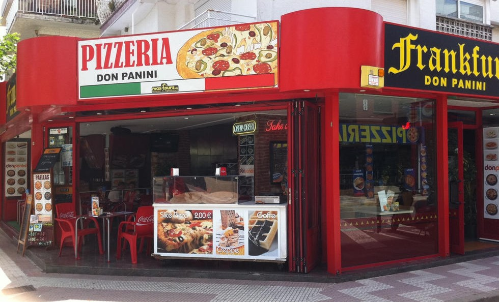
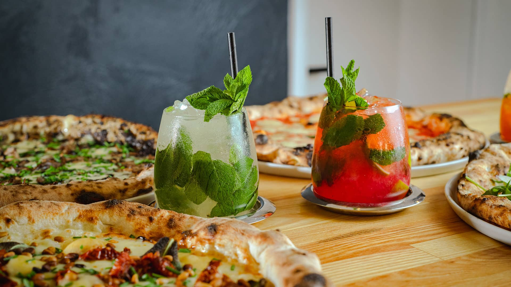

NUEVA APERTURA: PIZZERÍA MILANO
Una pareja de Lincoln abrió su primera pizzería vegetariana, solo dos meses después de mudar su popular comida para llevar a la ciudad. Dirigieron el negocio desde su jardín durante el cierre antes de abrir su nueva tienda de comida para llevar en St Martin's Lane en Lincoln el 1 de julio.
Un restaurante con capacidad para 16 personas abrió dentro del mismo edificio más recientemente el domingo 5 de septiembre y The Lincolnite fue a verlo.
Hay ocho pizzas en el menú que van desde £ 5- £ 10, incluida la nueva Smokey Special que contiene queso ahumado, mozzarella, tomate secado al sol, salvia crujiente y una base blanca de mozzarella.
Todas las pizzas también se pueden hacer veganas y sin gluten a pedido, pero para las últimas 24 horas se requiere un aviso.
Para los golosos, también hay cinco tipos diferentes de tiramisú, incluido el especial actual de toffee pegajoso.
El menú de bebidas incluye cinco variedades de Mojito a un precio de £ 5 cada una: clásico, flor de saúco y pepino, manzana especiada, naranja sanguina y Spritz de manzana, con versiones sin alcohol también disponibles. trabajar en el White Hart en Lincoln.
Además de los cócteles, también hay cervezas artesanales, lager de barril, vinos y licores.
Slow Rise también está contratando personal adicional de recepción y cualquier persona interesada debe enviar una solicitud enviando un correo electrónico a slowriseapplications@gmail.com.
Lewis y Rosie le dijeron a The Lincolnite: "Nos ha encantado hacer las entregas y la comida para llevar, pero es genial abrir el restaurante y dar la bienvenida a los clientes, verlos cara a cara y permitirles ver que sus pizzas se cocinan frescas".
La comida para llevar y el restaurante de Slow Rise abren de la siguiente manera:
| LUNES-MARTES: | Cerrado |
|---|---|
| MIÉRCOLES-JUEVES: | 12:30h - 23:30h |
| VIERNES-DOMINGO: | 12:30h - 00:30h |